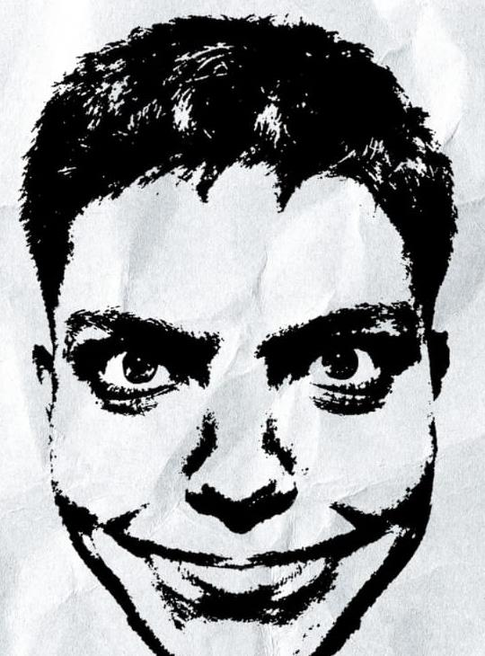
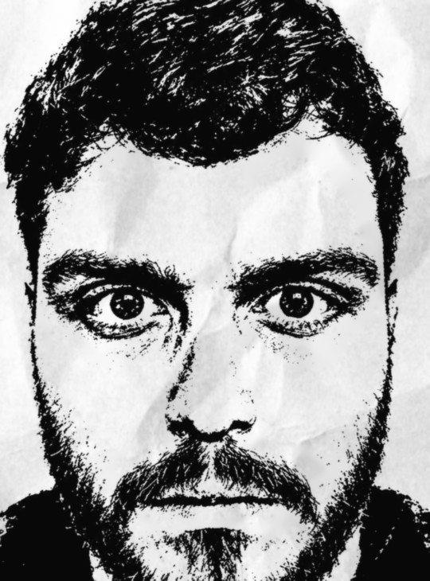

Avistou alguma anomalia, assombração ou monstruosidade?


0avistamentos registrados esta noite
Eles estão aqui e te observando. Várias pessoas já viram esta noite. Se apareceu algo para você, tire uma foto e registre o avistamento. No fim da noite, todos os registros serão reunidos.
Registro de avistamento
Preencha com calma. Eles já te viram, não adianta ter pressa! Seu tempo está contado.
Modo teste: o site ainda não foi ligado ao banco de fotos. O que você enviar fica só neste aparelho.